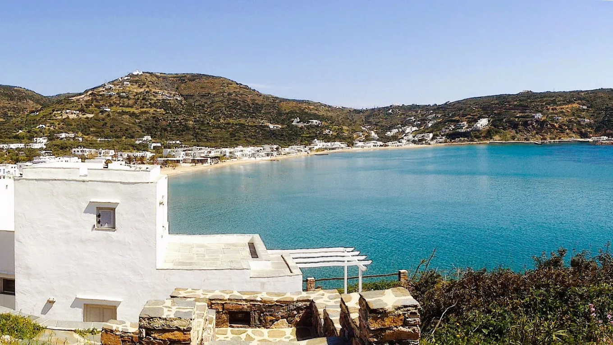
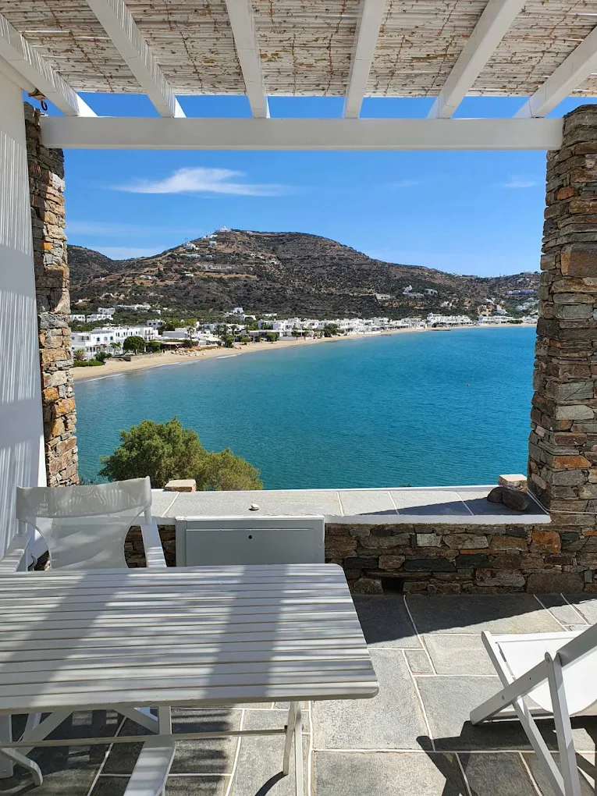
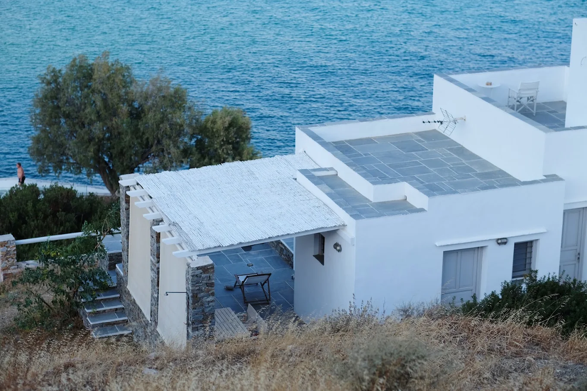
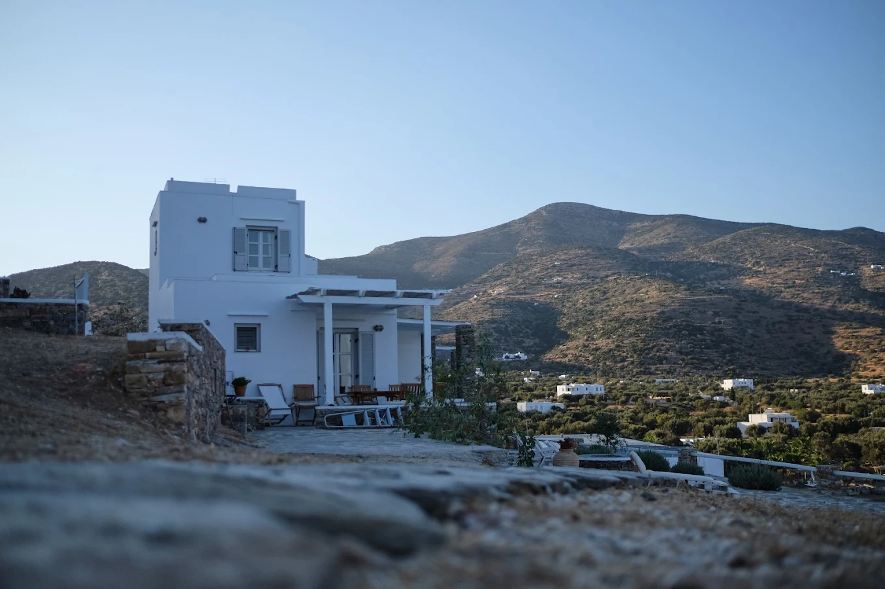

Duplex
- À l’étage : chambre avec lit double et balcon
- Rez-de-chaussée : séjour avec canapé-lit
- Salle de bains, cuisine entièrement équipée
- Terrasse privée avec vue sur la mer
- Climatisation, Wi-Fi

Une maison blanchie à la chaux sur le petit cap de Platys Gialos, à Sifnos, avec la mer au pied de chaque terrasse.
Akrotiraki
Akrotiraki signifie « petit cap ». Sur ce cap se dresse une maison cycladique blanchie à la chaux, partagée en quatre appartements, deux duplex et deux studios, avec des terrasses de pierre, des pergolas et environ 5 000 m² de jardin.
Nous sommes une famille de l’île et nous nous occupons nous-mêmes des appartements.

Les appartements
Chacun a vue sur la mer, une terrasse privée, la climatisation et le Wi-Fi, et vous y trouverez un panier d’accueil garni de produits de l’île.
Tarifs selon la saison ; le formulaire de demande indique le prix pour vos dates.

Les lieux

Environ 60 m sous la maison, notre rivage rocheux permet de se baigner au calme dans une eau claire.
La longue plage de sable de Platys Gialos est à environ 250 m, soit cinq minutes à pied, avec des tavernes et des boutiques au bord de l’eau.
Apollonia, le chef-lieu de Sifnos, est à 15 minutes en voiture. On rejoint Sifnos en ferry depuis le Pirée.
La colline d’Akrotiraki est aussi un site archéologique. On y a découvert un habitat du Cycladique ancien et sa nécropole, datant du Bronze ancien, ainsi que certains des plus anciens indices solidement datés de la production d’argent dans les Cyclades. Merci d’en prendre soin.

Galerie
Infos pratiques
Situation
Platys Gialos, Sifnos · à 250 m de la plage · à 15 min d’Apollonia
Sur Google Maps, sous le nom « Akrotiraki Apartments ».
Ouvrir dans Google Maps · 36,9282° N, 24,7259° E
Contact
Choisissez vos dates et votre appartement, puis envoyez-nous une demande. Nous vous répondons personnellement avec les disponibilités et un prix ; rien n’est réservé tant que nous n’avons pas confirmé.
Nous avons envoyé un accusé de réception à et nous vous répondrons personnellement sous un ou deux jours. Rien n’est encore réservé.
Si l’autre appartement du même type convient mieux à vos dates, nous pourrons vous le proposer ; ils sont semblables.
Vous préférez l’e-mail ? Utilisez le formulaire : nous vous répondrons depuis notre propre adresse.